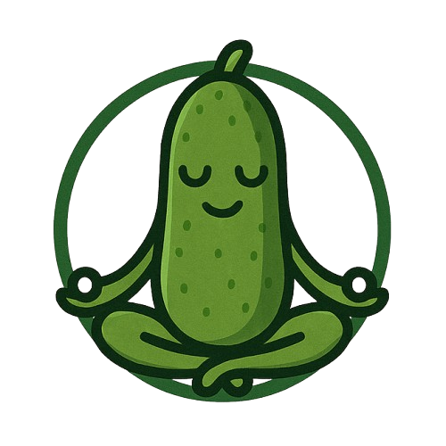

{ GivenWhenZen }
Online Gherkin Editor and Formatter
☀️
Format, validate and lint your Gherkin feature files, just paste it below:
Format
Clear
Copy to clipboard
Shortcuts:
Format: Ctrl+Shift+F (Windows) / Cmd+Shift+F (Mac)
Clear: Ctrl+D (Windows) / Cmd+D (Mac)
Made with
💙
in Berlin
© 2025 GivenWhenZen.